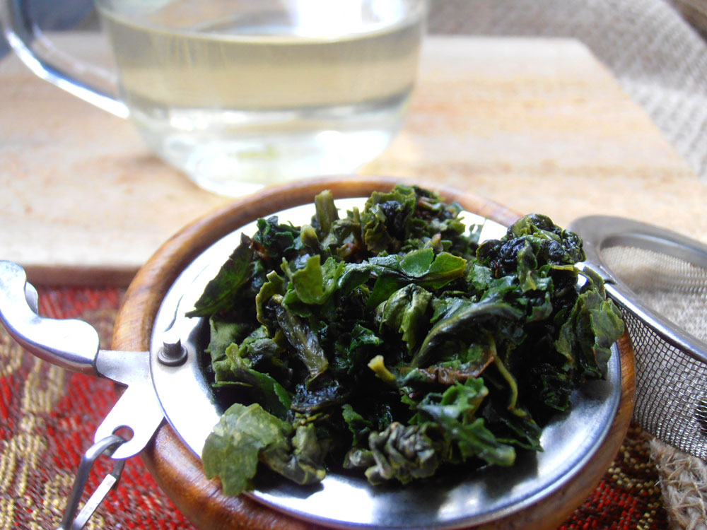

A recent post:
Posted on June 21, 2014 by Candice M.
When I talk to different people about tea, one of the standard questions they have is to ask what’s the deal with Oolong tea?
So let’s take a few pixels and explain just what this tea is, how it’s made, and why you should be drinking it.
The quick answer is that Oolong is the half-way point between green and black tea in terms of oxidation and intensity. But that answer would never be sufficient for me, so let’s dig a little deeper:
Oolongs, like all true teas—white, green, Oolong, black, and dark—start out life as leaves on the Camellia Sinensis plant. The differences between the tea types comes down to how the leaves are processed after harvesting. Leaves to become Oolong—a version of the words ‘wu’ and ‘lung’ meaning ‘black’ and ‘dragon’—are first hand-plucked and then laid out in the sun for a few hours to whither and begin to oxidize, changing the color of the leaves. Once the leaves reach the perfect balance of oxidation, they are fired in hot woks to stop the fermentation process and dry them. The final product is a crisp, beautifully wrinkled leaf that slowly unfurls and regains its shape once added to the hot water in your teapot.
Oolongs come in a spectrum of colors and intensities depending on how long the leaf was left to whither. The Chinese Iron Goddess of Mercy Oolong is a grassy, herbal-like tea closer in taste to a green, while the Taiwanese Formosa Oolongs sit closer to black teas with their amber liquid and deeper, floral taste. They also can be made with a variety of added flavors—the most popular:Jasmine.
Steeping time can be tricky with an Oolong, but a good rule of thumb is to never use boiling water and the more it looks like a green tea, the more it should be steeped like one to avoid the tea becoming bitter. 2 minutes at 180ºF is a safe place for most Oolongs.
The next question I get after explaining all that is to ask what the benefits of Oolong are, and why someone should drink it over any other tea. Since all teas come from the same place, preferences in teas mostly come down to taste preferences, but there are a few distinct qualities to an Oolong. Other than the meditative zen-time from making a full leaf tea, Oolongs offer moderate caffeine content and make perfect afternoon sipping teas. The less oxidized varieties contain some of the same compound touted in green teas—catechin. And their floral flavors make them a perfect compliment to light foods.
Oolongs are a complex facet of global tea consumption, coming in a variety of flavors and flaunting a showy leaf-shape. Sip it in the afternoon to refresh from earlier in the day, or pair it with your favorite salad or crisp pastry!
I and my co-founder take all our own photography as well.
I also run the day to day of the twitter, instagram, Pinterest, and facebook pages for Teas on the Loose. The majority of updates happen around blog posts on the site, but I also participate in tea related twitter parties and notice an uptick in interaction during those events. In particular, I've noticed an almost perfect 3 to 1 ratio of follows to followbacks on twitter.
Previous Project Back to Portfolio Next Project